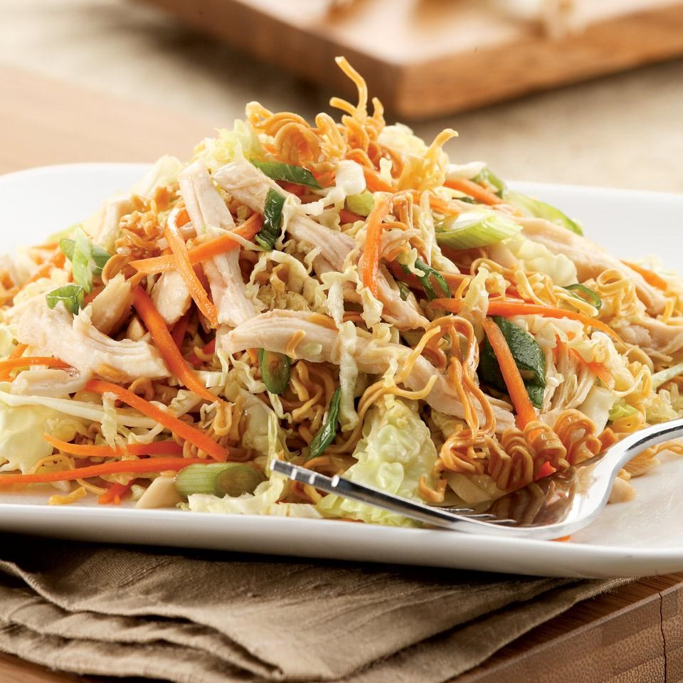

Chicken Noodle Salad

Description
Chicken noodle salad is a refreshing twist on the classic soup, combining tender chicken, cooked noodles, and crisp
vegetables for a satisfying meal. Typically featuring rotisserie or grilled chicken, the salad includes colorful
ingredients like bell peppers, carrots, and cucumbers, all tossed together with cooked pasta, such as egg noodles or
fusilli.
A zesty dressing, often made with olive oil, lemon juice, and herbs, enhances the flavors and adds a tangy kick. This
dish is perfect for warm weather, offering a light yet filling option that balances protein, carbohydrates, and
fresh produce in every bite.
Ingredients
- 3 cloves garlic, crushed
- ½ cup seasoned rice vinegar
- 1 tablespoon soy sauce
- 1 tablespoon fish sauce
- 1 tablespoon brown sugar
- 1 tablespoon Sriracha chile sauce
- 1 tablespoon hoisin sauce
- 1 teaspoon sesame oil
- 1 cooked chicken breast
- 1 (8 ounce) package spaghetti
- 1 cup grated carrots
- 1 red bell pepper, thinly sliced
- 4 green onions, thinly sliced
- ½ cup chopped roasted, salted peanuts
- ⅓ cup chopped fresh basil
- ⅓ cup chopped fresh mint
- ⅓ cup chopped cilantro
Steps:
- Whisk garlic, rice vinegar, soy sauce, fish sauce, brown sugar, Sriracha, hoisin, and sesame oil together in a
mixing bowl for the dressing.
- Tear chicken apart into strands similar in width to the spaghetti. Refrigerate until ready to use.
- Bring a large pot of lightly salted water to a boil. Cook spaghetti in the boiling water, stirring occasionally,
until tender yet firm to the bite, about 12 minutes. Drain and rinse with cold water.
- Transfer spaghetti to a mixing bowl; add the chicken, carrots, bell pepper, and green onions. Pour in the
dressing and toss by hand until well combined. Seal the surface of the salad with plastic wrap and refrigerate,
tossing occasionally, for 2 to 12 hours, the longer the better.
- Add peanuts, basil, mint, and cilantro to the salad. Toss well; taste and adjust for seasoning.